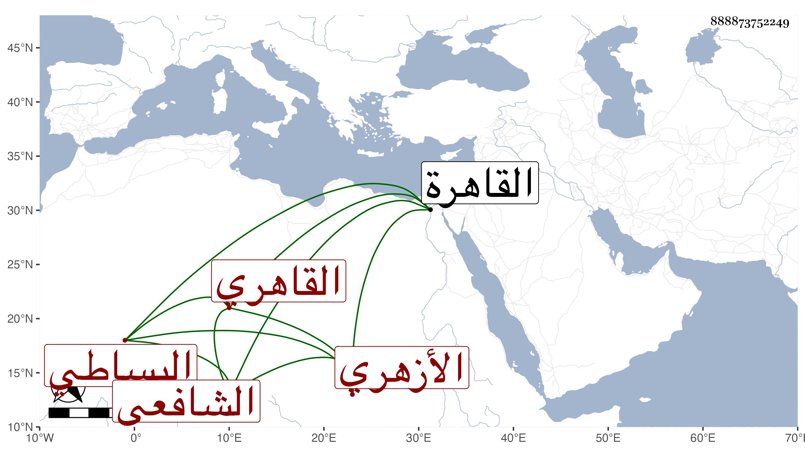

0902Sakhawi.DawLamic.ITO20230111-ara1.EIS1600.888873752249
Biography ID: 888873752249
355
محمد بن محمد بن عرفات بن محمد ناصر الدين البساطي الأصل القاهري الأزهري الشافعي ويعرف بابن الطحان حرفة أبيه . ولد تقريبا سنة ثلاث وخمسين بالقاهرة ونشأ بها فحفظ المنهاجين الفرعي والأصلي وألفية النحو واشتغل في الفقه والأصلين والعربية والمنطق والمعاني والبيان والرواية ومن شيوخه خلد المنوفي وابن الفالاتي وابن قاسم وزكريا والأبناسي والتقي والعلاء الحصنيين والكافياجي والعبادي والبكري والفخر المقسي والجوجري والديمي وبعضهم في الأخذ أكثر من بعض بل حضر اليسير جدا عند المناوي ودخل في مشكلات العلوم ورافق في بعضها الأمين العباسي والشرف الدمسيسي والفضلاء وتميز بذكائه بحيث حرج الجوجري منه وكانت له معه مطارحات نظما في مسائل علمية وكفه العبادي عن الفتيا خوفا من إقدامه وتأخر عن أقرانه لمزيد تهتكه عنهم وأضيفت غليه أشياء بحيث طرده الزين ابن مزهر عن عشرة ولده وبالغ بضربه ومع ذلك فما أمكنه الانثناء عنه ثم ألهم الله الولد بعد أبيه إبعاده وانضم للشهابي بن العيني حينئذ وبالغ بعض من هو في الجرأة بمكان حتى قال عند قبر الزيني ما معناه لتقر عينك بمفارقة ولدك لابن الطحان ومع ذلك فحلف عندي أنه ليس عنده أحد في مرتبة البدر وقال حين ولد له في أوائل سنة ست وتسعين ما سمعته من نظمه وفارقته وقد سكن قريبا من جامع الغمري وصار يحضر الجماعات بل يحضر عندي في دلائل النبوة وغيرها وحاضرته حسنة وأرجو أن يكون قد أناب نفع الله به .
